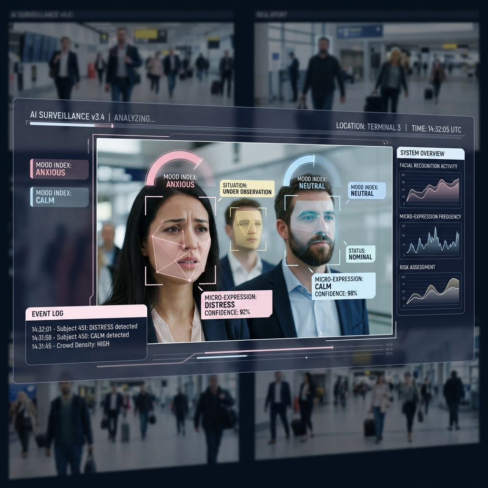

Expression Recognition
Read distress before it becomes an incident.
Analyses facial micro-expressions to detect distress, aggression, or fear — flagging potential victims or perpetrators early.

What it does
Expression Recognition reads facial micro-expressions in monitored public spaces to detect signs of distress, aggression, fear, and other behavioural anomalies. It gives operators an early, human-centred signal — pointing them toward a potential victim or perpetrator before an event fully unfolds.
This is one of AMS Safe City's most distinctive capabilities: among every domestic and international system benchmarked, none of the competitors offer expression recognition. It moves surveillance from 'what object is present' to 'what is the human state of this scene'.
Key capabilities
Detects distress, aggression, fear and anomalous affect from facial cues.
Surfaces a developing situation before it escalates into a reportable incident.
Helps operators identify both people at risk and people posing risk.
Applied selectively to sensitive public spaces and access points.
Flags scenes for human attention rather than acting autonomously.
A capability no benchmarked domestic or foreign competitor currently provides.
Capture → detect → act
Observe
Live feeds from monitored public zones are analysed frame-by-frame.
Interpret
The model classifies facial affect — distress, aggression, fear — and scores anomalies.
Flag
Anomalous scenes are raised to operators for a closer human read of the situation.
At a glance
| Signals | Distress, aggression, fear, behavioural anomaly |
| Role | Early-warning / triage |
| Scope | Selected sensitive public zones |
| Processing | On-premise real-time |
| Differentiator | Not offered by any benchmarked competitor |
| Oversight | Human-reviewed flags |
Where it's deployed
- Public-space safety. Identify a person in acute distress in a crowd or transit hub.
- De-escalation. Spot rising aggression early enough to position responders.
- Vulnerable monitoring. Flag fear or duress that may indicate coercion or assault.
- Control rooms. Layer human-state context on top of object-level detections.
Survey, integration, training & support — included
This module is delivered as part of the complete AMS Safe City service: ISD handles site survey, integration onto your existing cameras, multi-environment AI tuning, command-centre setup, operator onboarding, and ongoing maintenance — all processed on-premise within your own network.